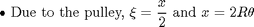
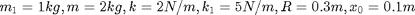
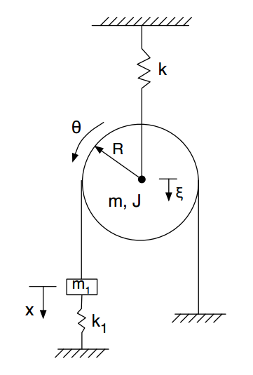
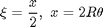
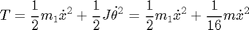
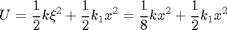
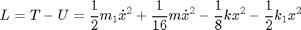
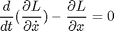
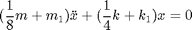

Contents
% Joel Lubinitsky % MAE 231 - HW6.2 % 02/25/15 clear all close all clc
Problem 2:
For the system sketched on the next page, use the Euler-Lagrange equations to derive the (single) equation of motion in terms of one general coordinate x. Feel free to ignore the static deflection that it will cancel out as we’ve seen in class (and to not include in the expression of the spring potential when you do). Some helpful reminders:

In terms of polar moment of inertia, consider the pulley as a disk (What is J in terms of m and R?)
For  and , plot the response of this system. From the figure, estimate the natural frequency of the system. Separately, calculate from the coefficients in the equation of motion. How do they compare?

Find: Response of system, (Estimate/Calculate)
Known
mass1 = 1; % kg mass = 2; % kg stiffness = 2; % N/m stiffness1 = 5; % N/m radius = 0.3; % m xInitial = 0.1; % m vInitial = 0; % m/s
Calculations






time = linspace(0, 5, 100);
% x =